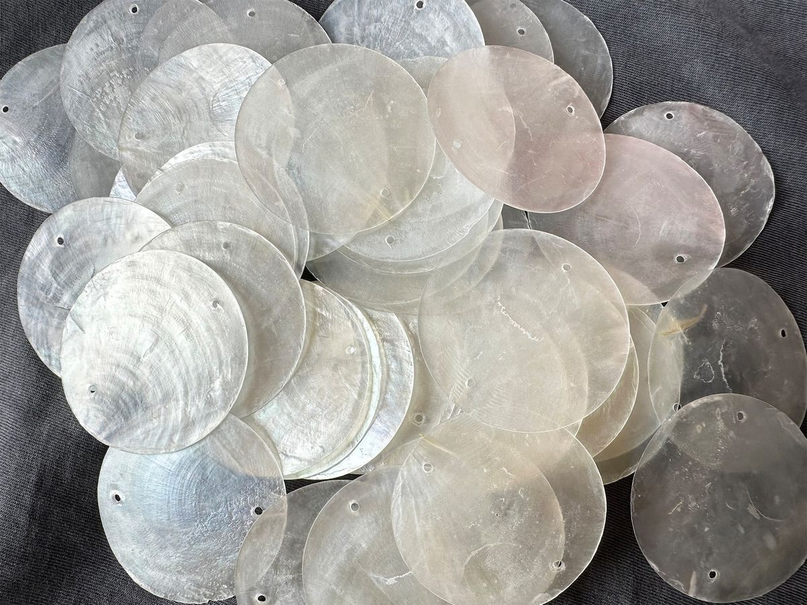
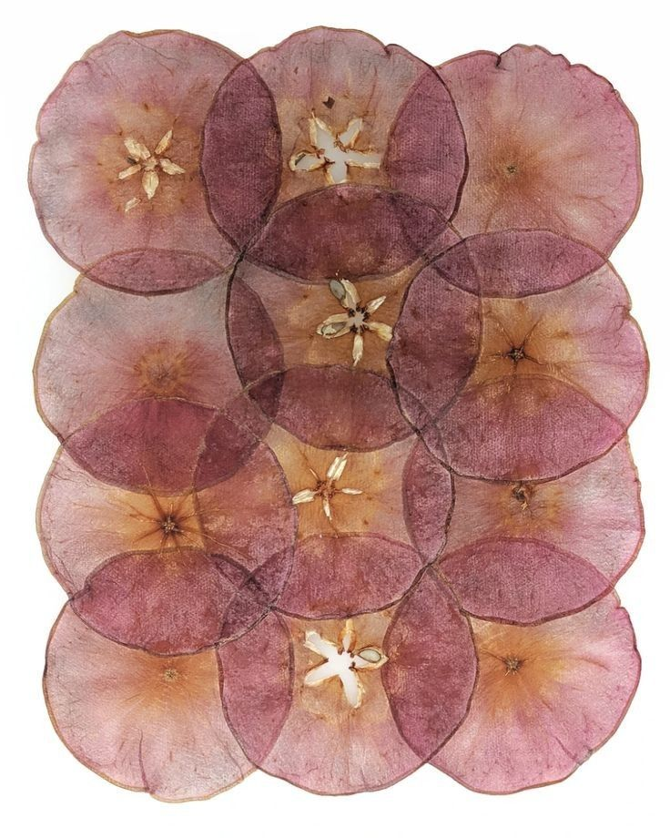
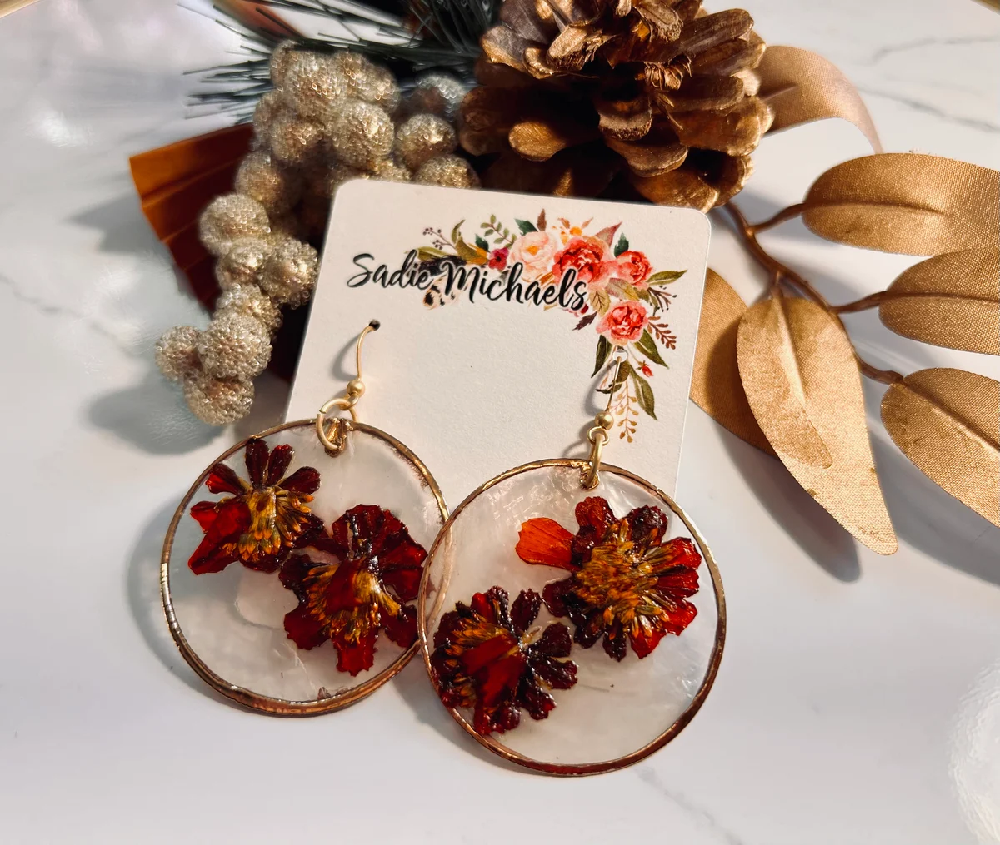

Capiz Shell

Capiz shell is derived from the windowpane oyster (Placuna placenta), a marine mollusk traditionally harvested in shallow coastal waters of the Philippines. The name “Capiz” originates from the province of Capiz in Panay Island, which historically became a major center for harvesting, processing, and trading this material. For centuries, Capiz shell has been deeply embedded in Filipino culture, craftsmanship, and architectural identity. Capiz shell is best known for its natural translucency, which allows light to pass through softly while diffusing glare. Unlike glass, it produces a warm, gentle glow that creates a calming and elegant atmosphere. When processed and polished, Capiz shells exhibit a pearly sheen with subtle organic textures, making each piece visually unique.
Types of Capiz Shell
Natural Capiz
Natural Capiz refers to Capiz shells that are minimally processed in order to preserve their original appearance and organic characteristics. This type retains the shell’s natural pearly white to off-white translucence, which gently filters light and produces a soft, diffused glow. Each piece of Natural Capiz is unique, displaying subtle variations in thickness, texture, and tone, as well as fine striations and irregular edges that reflect its marine origin The natural imperfections found in this type are highly valued, as they contribute to its authenticity and artisanal quality. Rather than appearing uniform or artificial, Natural Capiz emphasizes the beauty of natural materials and traditional craftsmanship. Because of this, it is widely used in heritage restorations, particularly in Spanish-era bahay na bato houses, churches, and historical structures where Capiz shells were originally used as window panes.
In contemporary design, Natural Capiz is favored in minimalist, tropical, and eco-inspired interiors. It complements wood, bamboo, rattan, and other organic materials, making it ideal for spaces that aim to highlight simplicity, sustainability, and cultural identity. Its neutral tone allows it to blend harmoniously with various color palettes while still providing visual texture and depth.
Dyed Capiz
Dyed Capiz shells undergo a coloring process in which natural pigments or modern dyes are applied to enhance their visual appeal. This process allows Capiz to be produced in a wide range of colors, including gold, silver, blue, green, red, amber, and soft pastel shades, while still maintaining its translucent quality. Light passing through dyed Capiz creates a more dramatic and expressive effect compared to natural shells.This type is especially popular in decorative and artistic applications, as it gives designers greater creative freedom. Dyed Capiz can be arranged in patterns, gradients, or contrasting color schemes to suit modern, contemporary, or eclectic interiors. Despite the added color, the shell’s natural texture and pearlescent sheen remain visible, preventing it from looking flat or artificial. Dyed Capiz is commonly used in statement lighting fixtures, such as chandeliers, pendant lamps, and wall sconces, where color and light interact to create visually striking effects. It is also widely applied in event décor, hotel interiors, retail displays, and festive installations, where bold visual impact is desired. In addition, dyed Capiz is often used in wall art, ornaments, and accessories to add vibrancy while still reflecting Filipino craftsmanship.
Pressed Capiz
Pressed Capiz is produced through a process in which raw Capiz shells are carefully flattened, trimmed, and shaped into uniform panels, tiles, or sheets. This treatment results in smoother surfaces, consistent thickness, and more regular edges, making it easier to integrate into modern construction and interior design applications. While more refined in appearance, pressed Capiz still retains the shell’s natural translucency and subtle iridescence.
Because of its standardized form, Pressed Capiz is well-suited for contemporary architectural elements that require precision and uniformity. It is commonly used in wall claddings, ceiling panels, cabinet inlays, furniture surfaces, and decorative partitions. Designers often combine pressed Capiz with metal frames, glass, or engineered wood to create a balance between natural texture and modern structure.
Pressed Capiz is also ideal for modular decorative installations, where repetition and alignment are essential. Its durability and ease of installation make it practical for both residential and commercial spaces, including hotels, restaurants, offices, and luxury retail environments. This type bridges the gap between traditional material use and modern design innovation, proving that Capiz shell can evolve while maintaining its cultural significance.
7 Uses & Application
Lighting Fixtures
Capiz shell is one of the most iconic materials used in lighting design in the Philippines. It is commonly crafted into lampshades, chandeliers, pendant lights, table lamps, and wall sconces, both in traditional and modern forms. Its natural translucency allows light to pass through gently, reducing harsh brightness and creating a soft, warm, and ambient glow that enhances comfort and relaxation.
Unlike glass or plastic, Capiz shell diffuses light in an organic way, producing subtle shadows and reflections that add depth to interior spaces. This quality makes it particularly suitable for living rooms, bedrooms, dining areas, hotels, resorts, restaurants, spas, and wellness centers, where mood lighting is essential. In luxury and hospitality settings, layered Capiz shells are often arranged in cascading or overlapping patterns to create dramatic yet soothing visual effects.
Window Panels and Dividers
Historically, Capiz shells were used as window panes in traditional Filipino houses, especially during the Spanish colonial period, before glass became widely available. Today, this traditional application has evolved into modern uses such as decorative window panels, sliding doors, folding screens, and room dividers.
These applications allow natural or artificial light to pass through while maintaining privacy, ventilation, and spatial separation. Capiz panels soften incoming daylight, reducing glare and heat while creating a calm and inviting interior atmosphere. They are especially effective in tropical architecture, open-plan homes, hotels, and cultural spaces, where airflow and natural lighting are essential design considerations.
Wall Decor and Interior Accents
Capiz shell is widely used as an accent material for walls, adding texture and elegance to interior spaces. It appears in wall tiles, mosaics, murals, framed panels, and decorative inlays, often combined with wood, metal, or stone to create visual contrast.
The shell’s pearlescent surface reflects light subtly, making walls appear more dynamic and layered rather than flat. Designers frequently use Capiz as a feature wall or focal point in reception areas, lobbies, hallways, and dining spaces. Its natural patterns and slight irregularities give walls a handcrafted, artisanal character that enhances both traditional and contemporary interiors.
Ceiling Treatments
In high-end residential and commercial interiors, Capiz shell is applied in ceiling panels, suspended installations, and decorative ceiling features. When paired with concealed or indirect lighting, Capiz ceilings create a glowing effect that adds warmth and visual interest to overhead spaces.
This application is commonly seen in luxury hotels, resorts, restaurants, function halls, and spas, where ceiling design plays a major role in defining the overall atmosphere. Capiz ceiling treatments help achieve a refined, tropical, and resort-like ambiance, making spaces feel more intimate and visually cohesive.
Furniture and Furnishings
Capiz shell is often used as a decorative surface material for tables, cabinets, drawers, headboards, mirrors, shelves, and trays. It is typically applied as an inlay or veneer, arranged in geometric or organic patterns that highlight the shell’s natural sheen.
Furniture pieces featuring Capiz shell are considered statement items, as they combine functionality with artistic craftsmanship. The material adds elegance and sophistication while maintaining a lightweight appearance. Capiz-finished furniture is popular in boutique hotels, upscale homes, and curated interior spaces where artisanal quality and cultural identity are valued.
Jewelry and Accessories
Beyond architectural and interior applications, Capiz shell plays an important role in fashion and personal accessories. Artisans craft it into earrings, necklaces, bracelets, buttons, brooches, hair accessories, and decorative embellishments. Its lightweight nature makes it comfortable to wear, while its natural translucence and sheen give it a refined and elegant appearance.
Capiz jewelry often features hand-cut shapes and natural forms, reflecting Filipino craftsmanship and creativity. These pieces are commonly sold as handmade accessories and cultural souvenirs, showcasing local artistry and sustainable material use.

Cultural and Festive Décor
Capiz shell is widely used in cultural, religious, and festive decorations throughout the Philippines. It is commonly seen in parol lanterns, Christmas ornaments, church décor, altar pieces, and festival installations. When illuminated, Capiz shells reflect and diffuse light beautifully, enhancing the celebratory atmosphere of events and ceremonies.
Its use in traditional celebrations highlights Capiz shell’s role not only as a decorative material but also as a symbol of Filipino heritage and artistry. Whether in religious rituals or seasonal festivities, Capiz shell contributes warmth, elegance, and cultural depth to communal spaces.